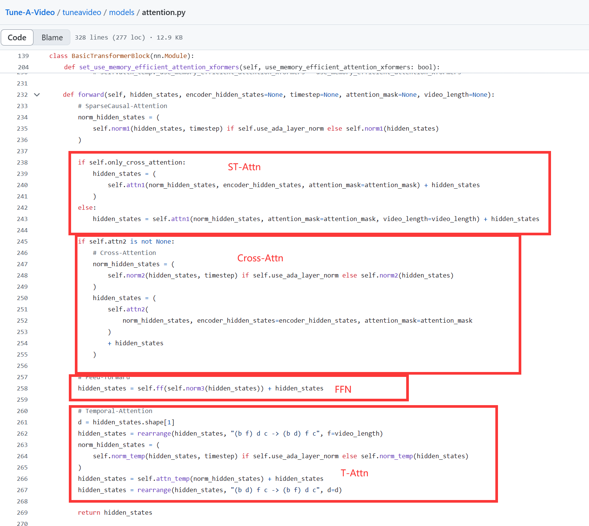
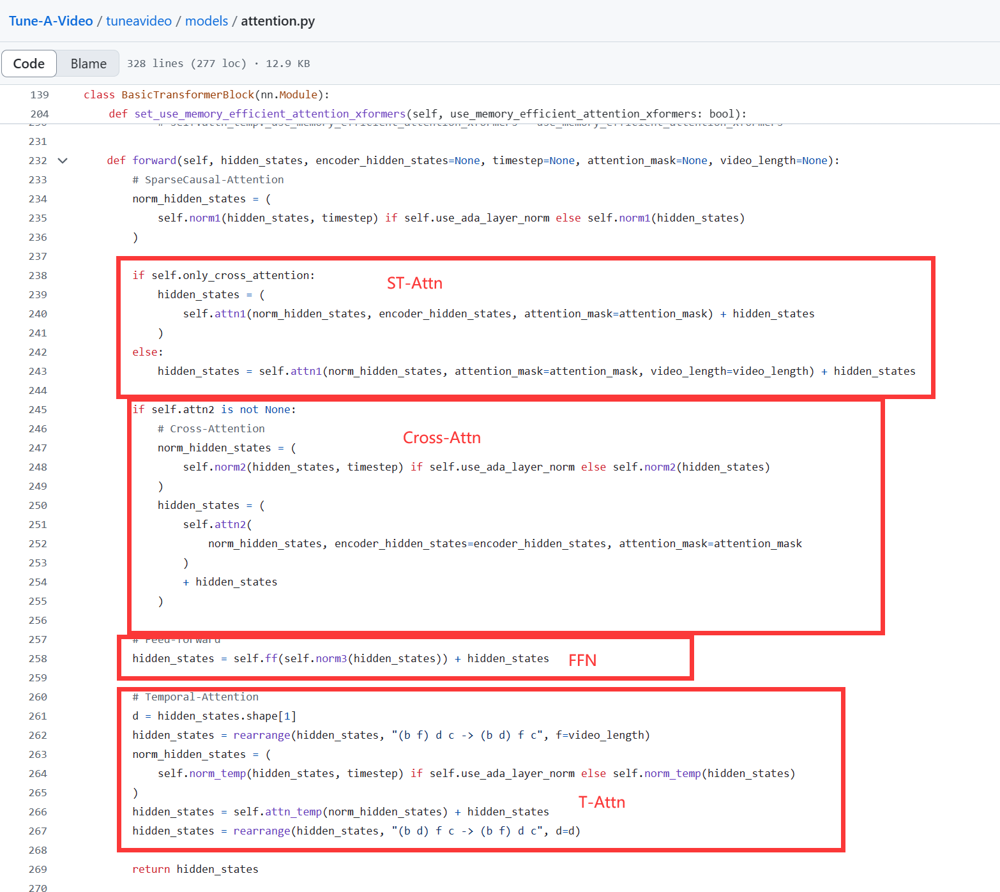

Video Diffusion
DynamiCrafter
 训练过程中，随机取一部分视角，通过ViT+Learnable Q Projection转换到和文字对齐的格式，并使用dual-branch随着text embedding一起注入到Unet当中。
训练过程中，随机取一部分视角，通过ViT+Learnable Q Projection转换到和文字对齐的格式，并使用dual-branch随着text embedding一起注入到Unet当中。
\(\(F_{\text{out}} = \text{Softmax}\left( \frac{QK^\top_{\text{txt}}}{\sqrt{d}} \right) V_{\text{txt}} + \lambda \cdot \text{Softmax}\left( \frac{QK^\top_{\text{ctx}}}{\sqrt{d}} \right) V_{\text{ctx}}\)\) \(\lambda\)越大，生成的视频越趋向于静止；\(\lambda\)越小，生成的视频物体越难成型。
ReconX
 要做的事情：通过稀疏view images（2个）来重构3D场景，渲染更多view的图片
流程：图片\(L\)->点云\(P\)->3D表征\(F(P)\)->注入到video diffusion
\(L\rightarrow P\)的过程使用DUSt3R进行
\(F(P)=FFN(CrossAttention(PosEmbedding(\hat P),PosEmbedding(P)))\)
\(\hat P\)是\(P\)的下采样八倍版本。
要做的事情：通过稀疏view images（2个）来重构3D场景，渲染更多view的图片
流程：图片\(L\)->点云\(P\)->3D表征\(F(P)\)->注入到video diffusion
\(L\rightarrow P\)的过程使用DUSt3R进行
\(F(P)=FFN(CrossAttention(PosEmbedding(\hat P),PosEmbedding(P)))\)
\(\hat P\)是\(P\)的下采样八倍版本。
Diffusion：把CLIP特征和\(F(P)\)特征进行Dual-Branch的Attention，最后加权得到\(F_{out}\)
对3DGS的改进：增加了Confidence Map作为额外输入，损失如下：

Tune-A-Video
 这个Method可以输入一个视频+文字，使用新的prompt输出一个新的类似的视频。每个输入都要微调一遍Unet中的Attention模块（ST-Attention和Cross-Attention的Q，Temporal Attention的KV）
其中STAttention如下：
这个Method可以输入一个视频+文字，使用新的prompt输出一个新的类似的视频。每个输入都要微调一遍Unet中的Attention模块（ST-Attention和Cross-Attention的Q，Temporal Attention的KV）
其中STAttention如下：
 Attention代码（不知道为什么，ST-Attn在原代码里面叫做SC-Attn SparseCausal）：
ST-attention代码位置：Tune-A-Video/tuneavideo/models/attention.py at main · showlab/Tune-A-Video (github.com)

Attention代码（不知道为什么，ST-Attn在原代码里面叫做SC-Attn SparseCausal）：
ST-attention代码位置：Tune-A-Video/tuneavideo/models/attention.py at main · showlab/Tune-A-Video (github.com)

MagicDrive
关于Single Frame的生成，MagicDrive主要是利用了多种3D信息，包括Camera Pose+Object Box+ RoadMap
 为了保持cross view的coherence，添加了cross-view attention(把相邻视图的concat在一起当作K和V)
为了保持cross view的coherence，添加了cross-view attention(把相邻视图的concat在一起当作K和V)
 表达形式是：
\(h_{out}=h_{in}+cross^L(h_{in},h_{left})+cross^R(h_{in},h_{right})\)
表达形式是：
\(h_{out}=h_{in}+cross^L(h_{in},h_{left})+cross^R(h_{in},h_{right})\)
视频的修改
- 把self-attention修改成ST-attention
- 在每一个transformer模块末尾增加temporal attention(T-Attn)
- 在7-frames长度的片段上面微调模型，只有首尾帧有bounding box(key frame)
- 在nuscenes-video上面训练
pipeline：

Scalable Diffusion Models with Transformers
2212.09748 (arxiv.org)
主要贡献是提出了DiT架构，而不是使用传统的Unet结构。
 对Latent Image(32 x 32 x 4)作patching。patch-size可以取2,4,8。
adaLN模块从c与t的和中回归\(\gamma\),\(\beta\),最大程度减少了Gflops，并加速了计算。这种可学习的缩放因子弥补了Transformer相比于卷积的一定缺陷。(ViT在小数据量不如ResNet)
adaLN-Zero模块额外回归了\(\alpha\)，并且使用零权重初始化的MLP来回归\(\alpha\)。
对Latent Image(32 x 32 x 4)作patching。patch-size可以取2,4,8。
adaLN模块从c与t的和中回归\(\gamma\),\(\beta\),最大程度减少了Gflops，并加速了计算。这种可学习的缩放因子弥补了Transformer相比于卷积的一定缺陷。(ViT在小数据量不如ResNet)
adaLN-Zero模块额外回归了\(\alpha\)，并且使用零权重初始化的MLP来回归\(\alpha\)。
DiVE
 特殊的Self-Attention:把BatchSize x Time Seq x View Num x H x W x C变成B x T x (\(H\times W\times V\)) x C，把 \(H\times W\times V\)当作token作self-attention.
BaseBlock就是Diffusion Transformer
前十三个BaseBlock的输出与Road Sketch的处理结果相加。Attention使用Sparse-Attention减小计算开销。
Rectified Flow:后期训练使用不同于IDDPM的公式(\(x_0\)是噪声)：
\(\(x_{t}=(1-t)x_0+tx_1\)\)
\(\(Loss=MSE(x_{predict-t}-(x_1-x_0))\)\)
\(t=\{\frac{k}{N}|k\in\{1,2,..,N\}\}\)，共采样\(N\)次
\(\(x_{t-\frac{1}{N}}=x_t-\frac{1}{N}x_{predict-t}\)\)
用这个的目的：
- 提高稳定度
- 减少推理步数
First-k Frame Masking：为了实现任意长度视频的生成，我们提出了首-k帧屏蔽策略，使模型能够从前面的帧无缝预测未来帧。形式化地，给定一个表示被屏蔽帧的二进制掩码 \(m\)（未屏蔽的帧作为未来帧生成的条件），我们更新\(x_t\) 为\(x_t\leftarrow x_t \cdot (1-m) + m\cdot x_1\).损失仅在未屏蔽帧上计算。在推理过程中，视频以自回归方式生成，前一段视频的最后-k帧用于为下一段视频生成提供条件。
（这一段具体我也不是很懂，代码也没开源，所以暂时无法详细说明原理 TAT）
Classifier-free Guidance for Multi-Conditions :
![[Pasted image 20241013210402.png]]
\(\Phi\)为全空的条件（即类似drop out的东西），通过控制三个\(\lambda\)来控制text、layout、sketch的控制程度。
特殊的Self-Attention:把BatchSize x Time Seq x View Num x H x W x C变成B x T x (\(H\times W\times V\)) x C，把 \(H\times W\times V\)当作token作self-attention.
BaseBlock就是Diffusion Transformer
前十三个BaseBlock的输出与Road Sketch的处理结果相加。Attention使用Sparse-Attention减小计算开销。
Rectified Flow:后期训练使用不同于IDDPM的公式(\(x_0\)是噪声)：
\(\(x_{t}=(1-t)x_0+tx_1\)\)
\(\(Loss=MSE(x_{predict-t}-(x_1-x_0))\)\)
\(t=\{\frac{k}{N}|k\in\{1,2,..,N\}\}\)，共采样\(N\)次
\(\(x_{t-\frac{1}{N}}=x_t-\frac{1}{N}x_{predict-t}\)\)
用这个的目的：
- 提高稳定度
- 减少推理步数
First-k Frame Masking：为了实现任意长度视频的生成，我们提出了首-k帧屏蔽策略，使模型能够从前面的帧无缝预测未来帧。形式化地，给定一个表示被屏蔽帧的二进制掩码 \(m\)（未屏蔽的帧作为未来帧生成的条件），我们更新\(x_t\) 为\(x_t\leftarrow x_t \cdot (1-m) + m\cdot x_1\).损失仅在未屏蔽帧上计算。在推理过程中，视频以自回归方式生成，前一段视频的最后-k帧用于为下一段视频生成提供条件。
（这一段具体我也不是很懂，代码也没开源，所以暂时无法详细说明原理 TAT）
Classifier-free Guidance for Multi-Conditions :
![[Pasted image 20241013210402.png]]
\(\Phi\)为全空的条件（即类似drop out的东西），通过控制三个\(\lambda\)来控制text、layout、sketch的控制程度。